operanthouseのヘッダー
Kitaya lab
Setup of RaspberryPi 5
The Raspberry Pi 5, a successor to the Raspberry Pi 4, provides improved computational performance but requires a higher current supply (5 V, 5 A). For stable operation, prepare a 5 V/5 A power adapter.
This instruction uses Raspberry Pi OS released on 10/1/2025 (64-bit Debian 13 (Trixie) distribution). Later versions would be compatible; however, if it does not work, obtain a image of this version from the Raspberry Pi OS archive.
Connect the power cable, keyboard, and mouse to the Raspberry Pi, and configure Wi-Fi. If Wi-Fi is not available, connect a ethernet cable instead.
Insert the SD card, then press the power button on the side of the Raspberry Pi. Enter the username and password at the initial setup screen (Note them because you'll need it later).
Desktop of the Raspberry Pi;
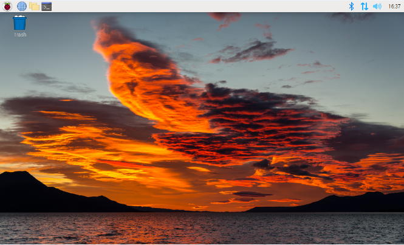
System update
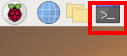
The terminal will appear. On Raspberry Pi, programs are installed through the terminal.
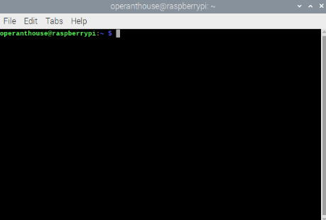
First, update the software to the latest version. Enter the following command in the terminal and press Enter key:
sudo apt update
During installation, you may see a message such as Do you want to continue? If so, type the corresponding key (usually y) and press Enter to continue.
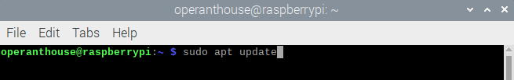
Once the process finishes, enter the following command:
sudo apt upgrade -y
Installing the On-Screen Keyboard
To save space without a physical keyboard, install a software keyboard. Open the terminal and type:
sudo apt install onboard
Onboard is the virtual keyboard software that can be used with a mouse. It can be launched from Universal Access.
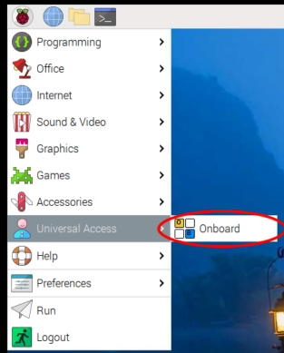
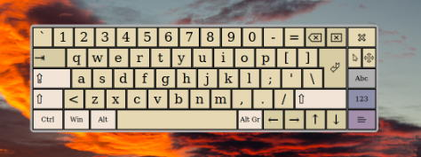
Installing OpenCV
Next, install OpenCV, a Python plugin required for camera capture. In the terminal, type:
sudo apt install python3-opencv
To check if the installation succeeded, enter:
python3
import cv2
cv2.__version__
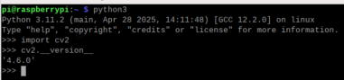
If a version number appears, the installation was successful. (Note: The underscores in __version__ are two characters, not one).
Exit Python by typing:
exit()
Disabling Screen Sleep
By default, Raspberry Pi automatically blanks the screen after a certain period of time. To disable this, open Raspberry Pi Configuration.
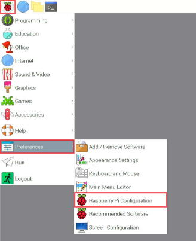
Go to the Display tab, set Screen Blanking to Disable, and reboot.
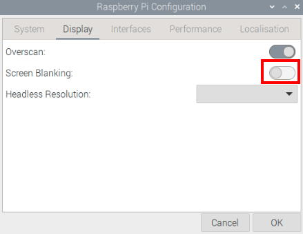
Installing the Arduino Editor
sudo apt install arduino
If you encounter the error:
E: Unmet dependencies. Try 'apt --fix-broken install' with no packages (or specify a solution)
then run:
sudo apt --fix-broken install
sudo apt install arduino
Installing Operant House Software
Download the Operant House software and extract it to the desktop.
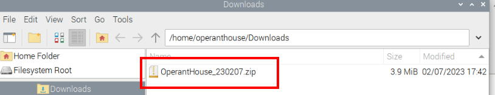

Navigate back one directory by clicking the upward arrow.
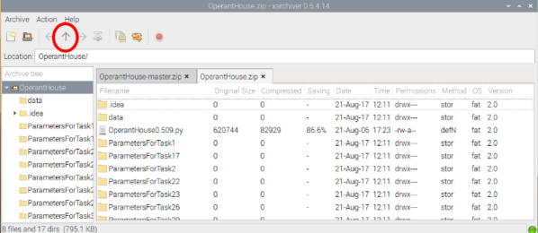
Drag and drop the OperantHouse folder to the desktop.
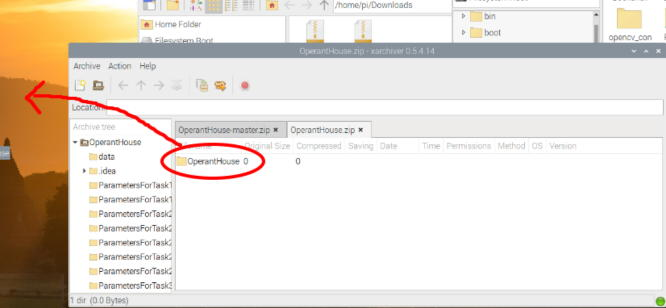
To transfer the program for Operant House to Arduino:
Open SerialConnectionWithPython16.ino in OperantHouse -> SerialConnectionWithPython16.
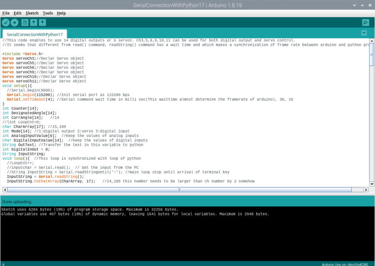
Make sure the port is set to Arduino Uno.
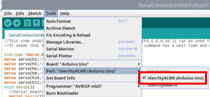
To install servo library, open Manage Libraries...

Search for and install the latest Servolibrary.
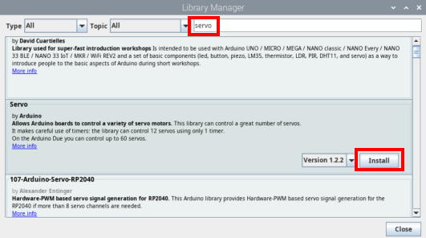
When multiple options appear, select Install all.
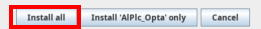
Then, click the Build & Upload button to transfer the program.
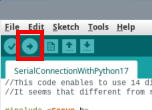
Running Operant House
On Raspberry Pi, Python programs can be executed with Thonny (it is recommended to set .py files to open with Thonny by default).

Load the latest OperantHouse*.py file from the OperantHouse folder.
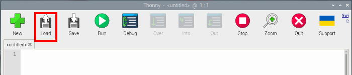
Check the General settings. They should be as follows. If different, correct them and save
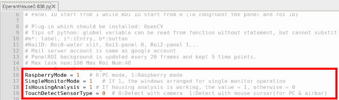
If the monitor resolution is not 1280x800 pixels, change the values here. The size and position of the touch window are determined based on these values.
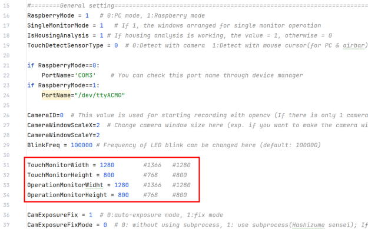
Click Run to launch Operant House.
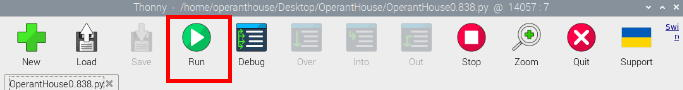
The main window will appear. Use the TouchWinbutton to hide the panel window and CamSizeto enlarge the camera window.
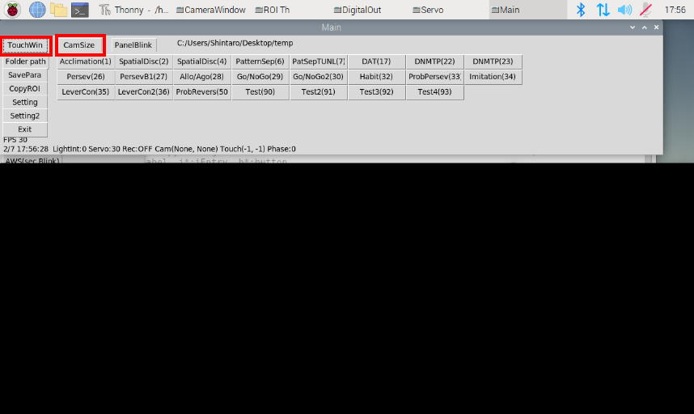
If the camera window shows video, it is working correctly.
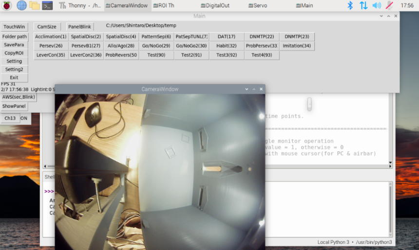
Test the buttons for reward cue, IR illumination, ceiling light, and servo movement.
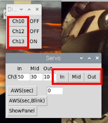
If everything works, the installation is complete. Exit by clicking Exit in the main window or Stop button in Thonny.
Changing Desktop Color
Right-click an empty area, select Desktop Preferences.
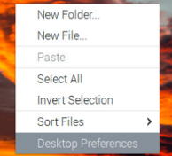
Adjust the settings, and press OK.
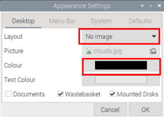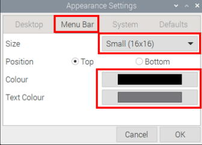
The background should now be black.
Because Raspberry Pi setup is time-consuming, it is recommended to create an image of the SD card at this point. When adding more devices in the future, copy from this SD card. See Tips in the left menu for details.
Remote Desktop Setup
Since Operant House can be difficult to operate with a single monitor configuration, it is recommended to use RealVNC remote desktop from other computer.
In Raspberry Pi Configuration, go to Interfaces, enable VNC, and reboot.
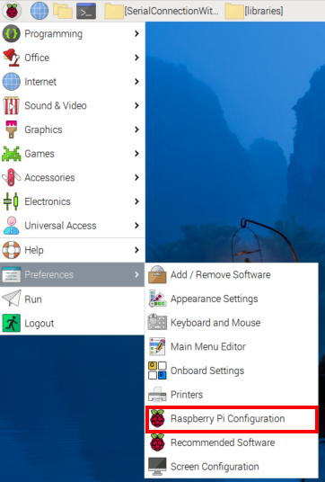
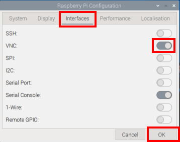
After reboot, if you see the VNC icon on the taskbar, it is enabled.
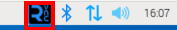
Next, click the network icon (LAN or Wi-Fi) and note the IP address. This is the “address” of your Raspberry Pi. (By default, this number changes after each reboot, so configure a fixed IP if needed.)
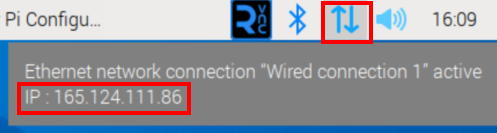
On your computer (must be in the same building), install RealVNC and create a New Connection.
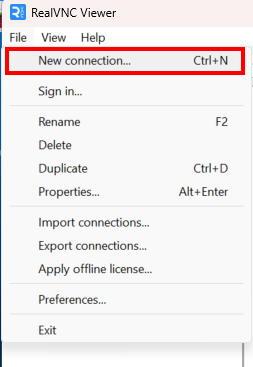
Enter the Raspberry Pi’s IP address and assign any device name you like.
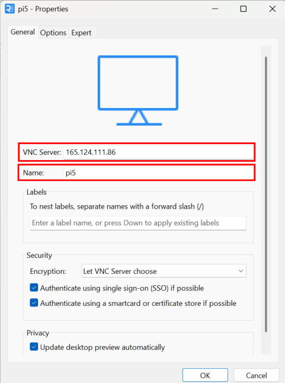
Double click the icon of the Raspberry Pi. When opening the connection, you will be prompted for a username and password. Use the ones set during initial Raspberry Pi setup.
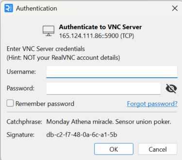
To confirm your username, type whoami in the terminal. (Note: This is different from the Hostname in Raspberry Pi Configuration.)
The password can be changed under System → Change Password.
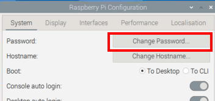
RealVNC is free for use within the same LAN, but accessing from outside (e.g., from home) requires a paid account. If you want free remote access from home, connect from your home PC to the operation computer using Chrome Remote Desktop, and from there access the Raspberry Pi via RealVNC.
Your Raspberry Pi setup is now complete.
Next process
1. Touch panel only → go to IR Camera Detection
2. Lever module → go to Lever Module
3. Infrared sensor bar (NNAMC3460PCEV) → go to IR Sensor Bar
If you are unsure whether to use (1) or (3), start with (1). (Option 3 is only necessary if adjacent mask holes are vertically long and close together.)